Hello and welcome!
Welcome to my website! I’m thrilled to have you here. This space is dedicated to sharing my passions, projects, and insights with you. Whether you're here to explore creative works, dive into web development ideas, or simply connect, I hope you find something inspiring and valuable. Feel free to look around, and thank you for stopping by!
Hello, and welcome to my website!
My name is Erika, and I’m a
computer science student passionate about technology,
problem-solving, and creativity.
With a dream of becoming a
web developer, I am deeply
committed to honing my
skills and contributing to the
dynamic tech industry in
meaningful ways.
Whether it’s building
intuitive websites or exploring
innovative solutions,
I’m driven by a desire to create
and make an impact.
More About Myself
My Hobbies:
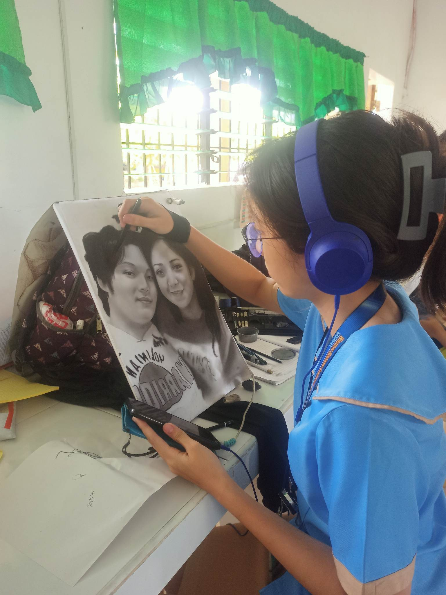
When I’m not immersed in coding and technology,
I spend my time pursuing my hobbies.
Art allows me to express my creativity and think outside
the box, helping me develop a unique perspective that
often inspires my problem-solving approach in tech.
My Other Artworks:
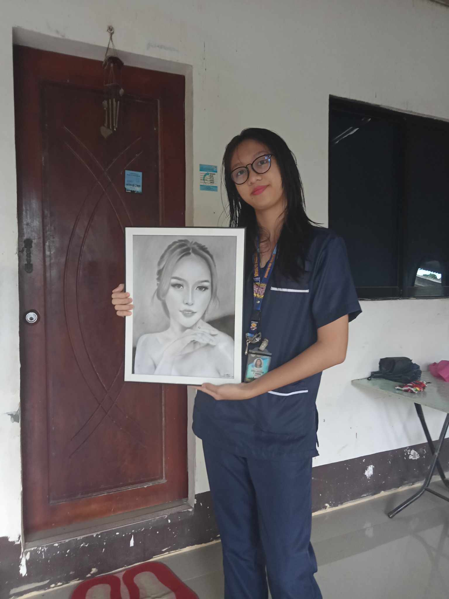
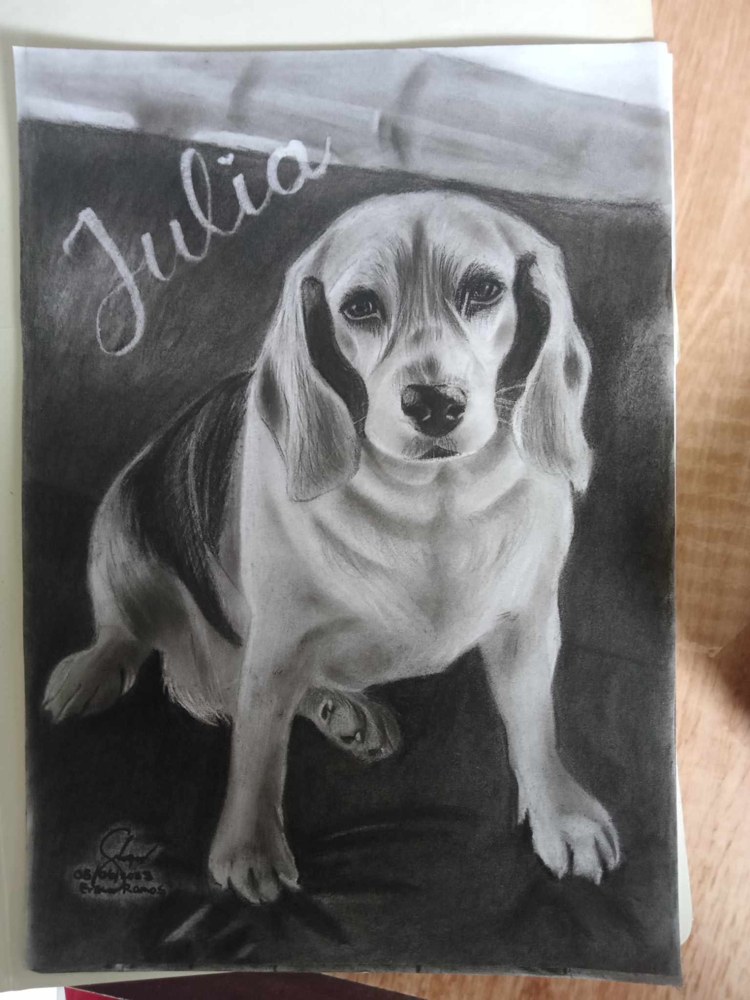
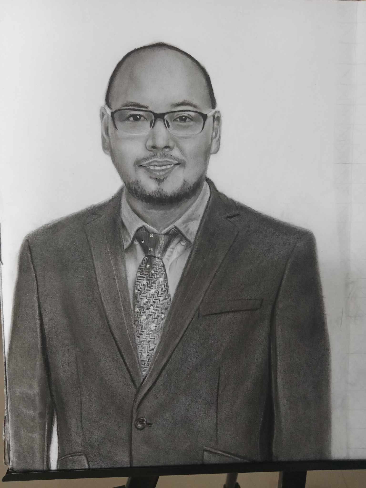
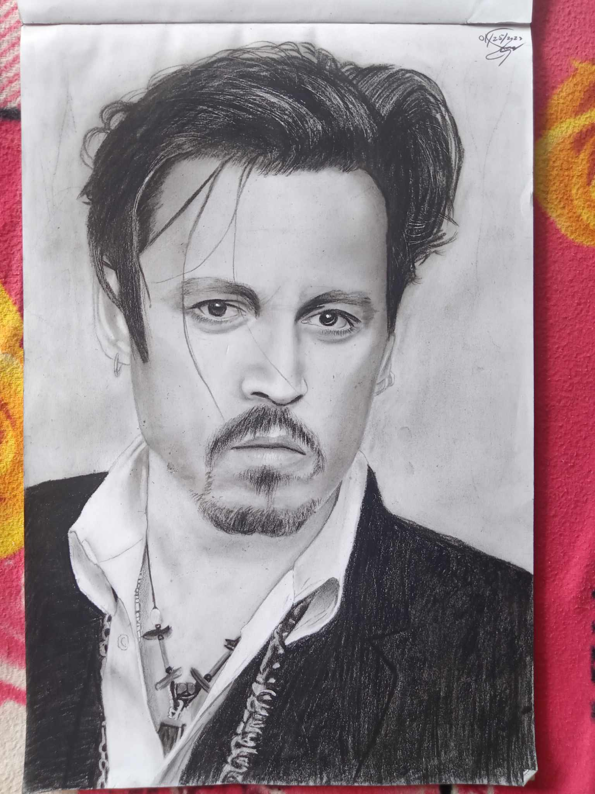
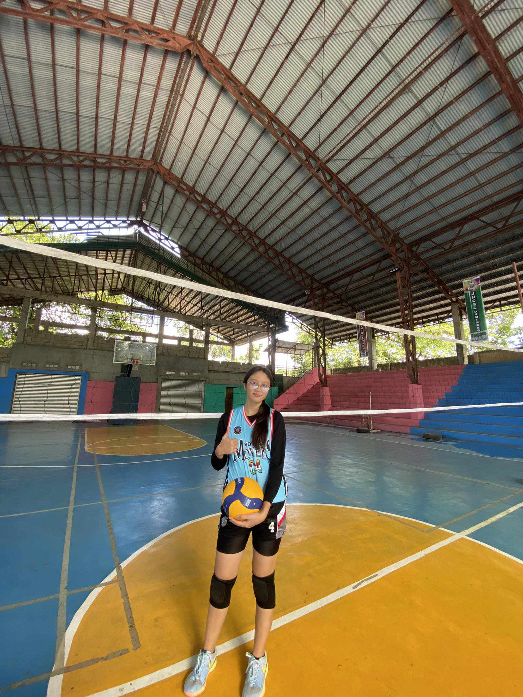
Volleyball holds a special place in my heart because it combines teamwork, strategy, and the thrill of competition. I love the fast-paced nature of the game, the challenge of improving my skills, and the camaraderie built with my teammates. Whether it's the excitement of a well-placed spike or the satisfaction of a perfect dig, every moment on the court energizes me. Volleyball is not just a sport to me; it’s a passion that teaches me discipline, perseverance, and the value of working together toward a shared goal.
Volleyball Gallery:
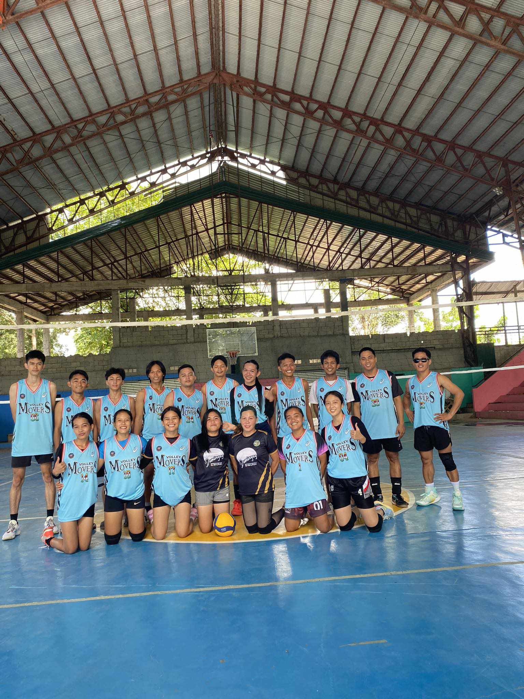
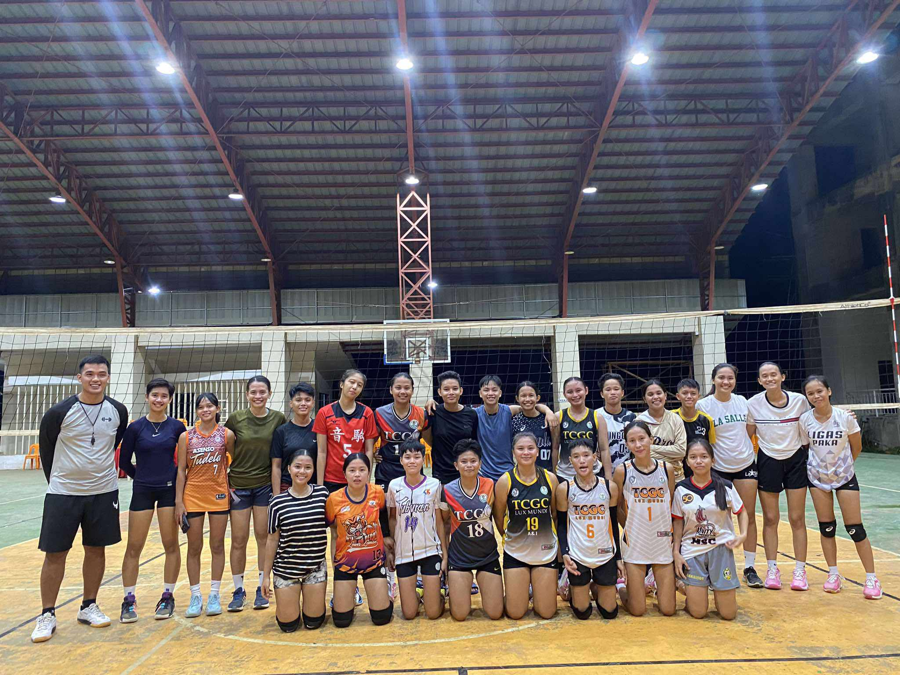
My Faith
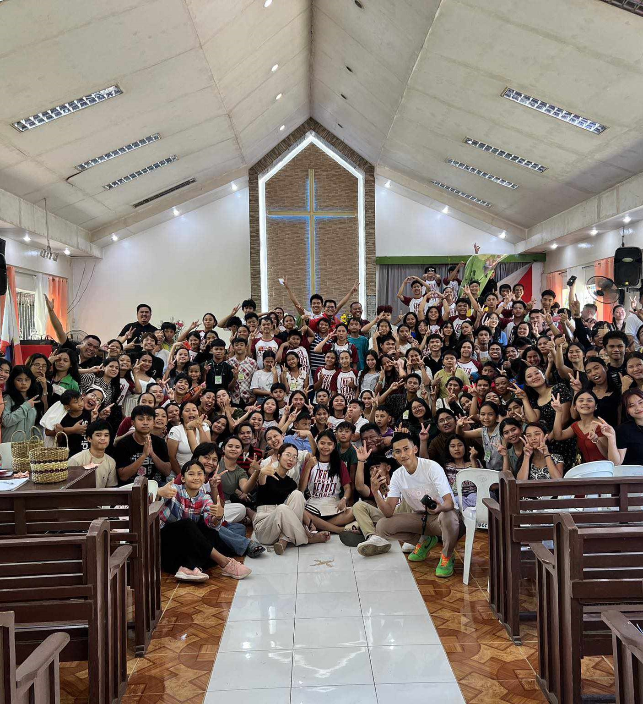
I am also deeply committed to my faith in God, which serves as the foundation of my values and aspirations.
My participation in church and religious activities strengthens my character,
guiding me to live with integrity, compassion, and purpose.
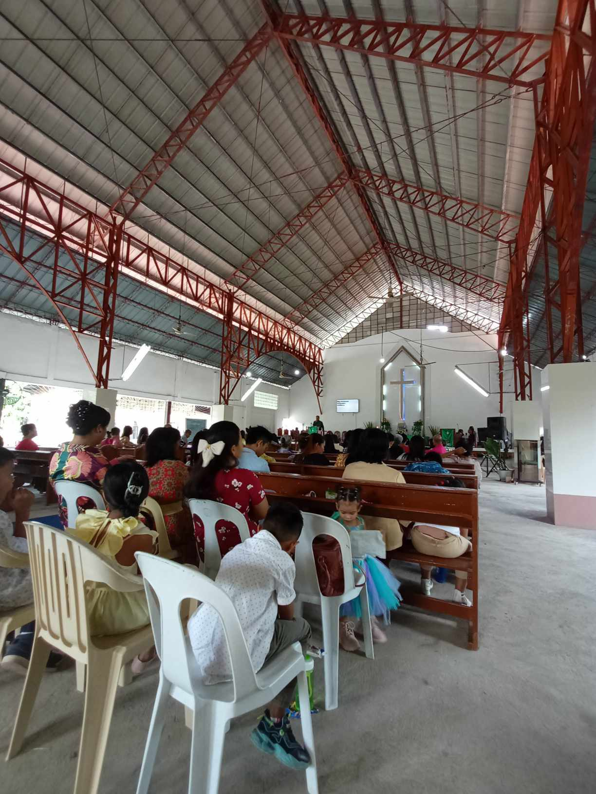
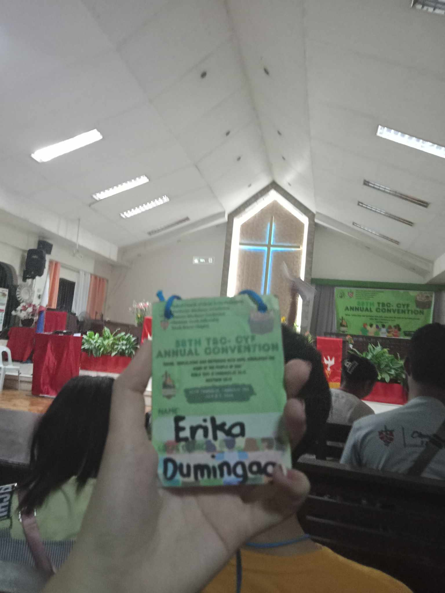
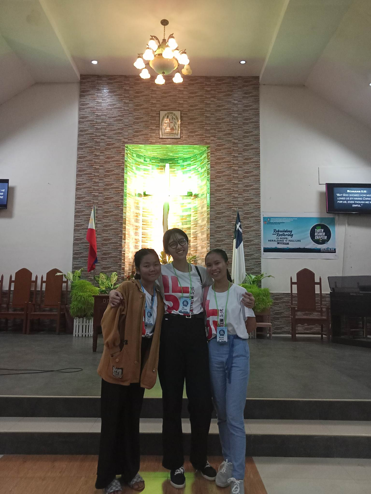
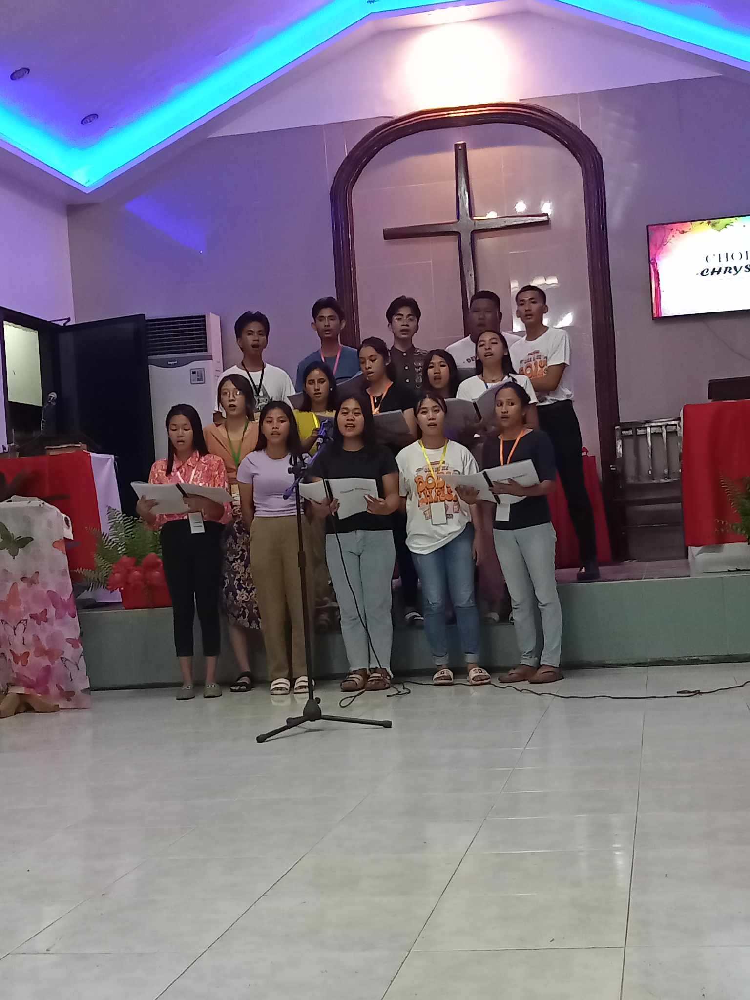
"The Lord is on my side; I shall not Fear."
-Psalms 118:6
I believe in lifelong learning, continuous growth, and the power of collaboration. As I work toward my goals, I’m excited to connect with like-minded individuals, share ideas, and explore new opportunities. Thank you for visiting my website—feel free to look around and reach out. I’d love to hear from you!